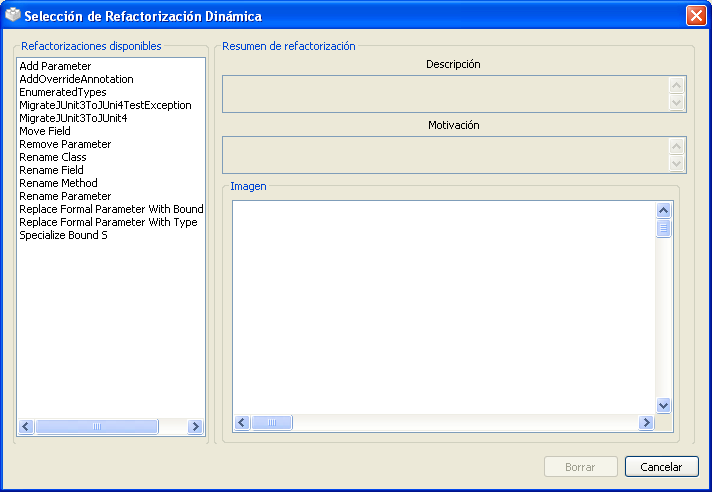
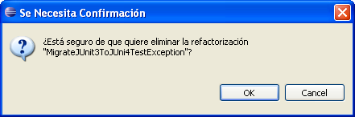

Aparecer� una ventana con la lista de refactorizaciones disponbiles.

Borrar.
Se le pedir� confirmaci�n antes de proceder a eliminar definitivamente la refactorizaci�n.
Cancelar si no desea eliminar la refactorizaci�n. En otro caso,
pulsar el bot�n OK resultar� en la eliminaci�n permanente de la refactorizaci�n.
Recuerde hacer una copia de seguridad del directorio de refactorizaciones din�micas del plugin antes de eliminar o editar cualquiera de ellas, para poder restaurarlas manualmente despu�s si lo desea. Si no, no podr� deshacer ninguna de estas operaciones.